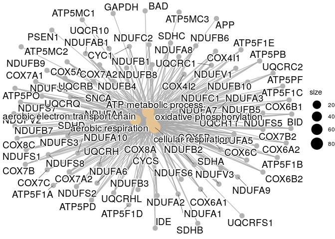
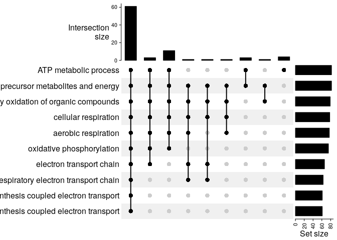
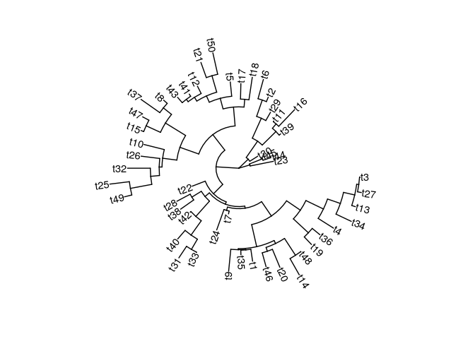
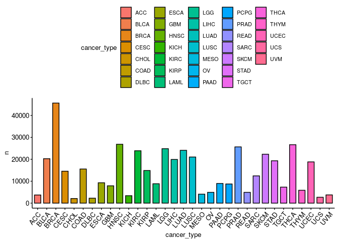
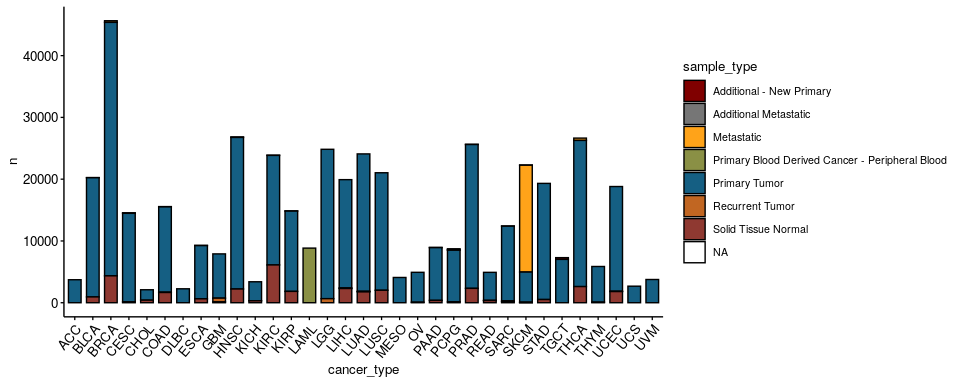
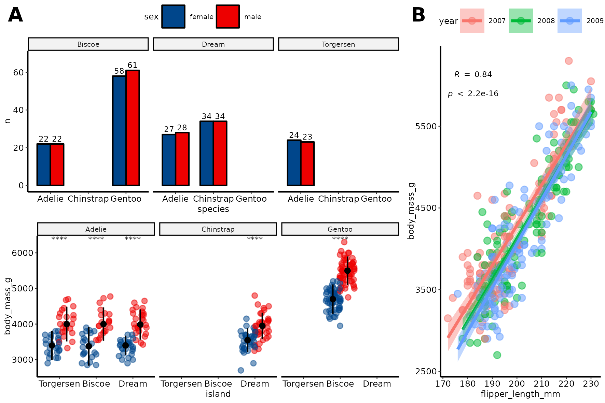
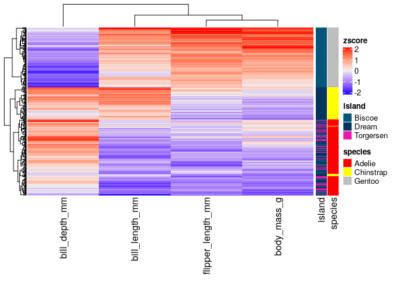
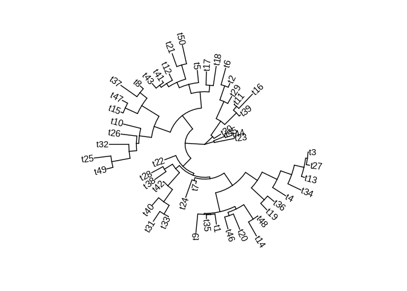
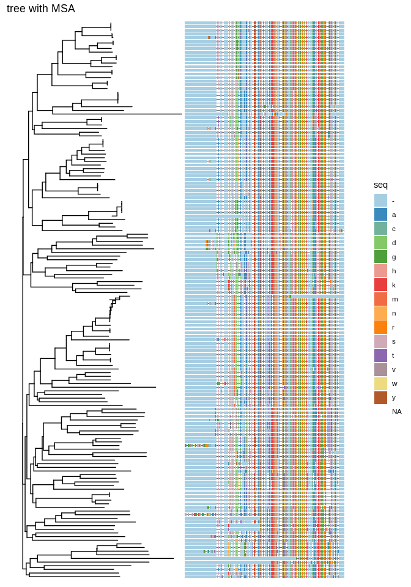

Load data
Contents
Load data¶

To start playing around with the functions from these packages we will
use the
palmerpenguins
data set. This simple data set has both continuous and categorical
variables that make it perfect for showcasing how different functions
work.
require(dplyr)
require(tidyr)
penguins_url = 'https://raw.githubusercontent.com/allisonhorst/palmerpenguins/master/inst/extdata/penguins.csv'
dat = read.csv(url(penguins_url), stringsAsFactors = TRUE)
dat = dat %>% drop_na()
head(dat)
## species island bill_length_mm bill_depth_mm flipper_length_mm body_mass_g
## 1 Adelie Torgersen 39.1 18.7 181 3750
## 2 Adelie Torgersen 39.5 17.4 186 3800
## 3 Adelie Torgersen 40.3 18.0 195 3250
## 4 Adelie Torgersen 36.7 19.3 193 3450
## 5 Adelie Torgersen 39.3 20.6 190 3650
## 6 Adelie Torgersen 38.9 17.8 181 3625
## sex year
## 1 male 2007
## 2 female 2007
## 3 female 2007
## 4 female 2007
## 5 male 2007
## 6 female 2007
General plotting with ggpubr¶
require(ggpubr)
require(ggplot2)
ggpubr allows to make insightful plots quickly for exploration that in
turn can be further customized thanks to being built on top of
ggplot2.
These are useful links for using this package:
Next, we will try to answer different questions using this library and
ggplot2.
How many penguins of each species did we observe in total?¶
ggpie(dat %>% count(species), x = 'n', fill = 'species')

How many penguins of each species and sex did we observe across the different islands?¶
ggbarplot(dat %>% count(species, sex, island), x = 'species', y = 'n', fill = 'sex',
label = TRUE, position = position_dodge(0.7), facet.by = 'island', palette = 'lancet')

What are the distributions of flipper lengths considering penguin species, sex and islands of origin?¶
gghistogram(dat, x = 'flipper_length_mm', fill = 'sex', facet.by = c('species','island'))

Alternatively, we can use stripcharts charts:
ggstripchart(dat, x = 'island', y = 'flipper_length_mm', color = 'sex', facet.by = 'species', alpha = 0.5, position = position_jitterdodge(), add = 'median_iqr', add.params = list(color='black', group='sex', size=0.2))

Are the differences of body mass between sexes significant if we control for species and island?¶
ggstripchart(dat, x = 'island', y = 'body_mass_g', color = 'sex', facet.by = 'species', alpha = 0.5, position = position_jitterdodge(), add = 'median_iqr', add.params = list(color='black', group='sex', size=0.2))+
stat_compare_means(aes(color = sex), label = "p.signif", method = 'wilcox.test')

What is the relationship between flipper length, body mass and bill length?¶
ggscatter(dat, x = 'flipper_length_mm', y = 'body_mass_g', color = 'bill_length_mm', alpha = 0.5)

Could we have sampling bias in the relationship between flipper length and body mass?¶
ggscatter(dat %>% mutate(year=factor(year)), x = 'flipper_length_mm', y = 'body_mass_g', alpha = 0.5, color = 'year', ellipse = TRUE)

What is the spearman correlation coefficient between body mass and flipper length?¶
ggscatter(dat %>% mutate(year=factor(year)), x = 'flipper_length_mm', y = 'body_mass_g', alpha = 0.5, color = 'year',
add = 'reg.line', conf.int = TRUE,
cor.coef = TRUE,
cor.coeff.args = list(method = 'spearman', label.sep = '\n')) +
theme(aspect.ratio = 1)

Create and save a figure¶
fontsize = 6
labsize = 2
# overview number of observations of every sex across islands and species
p1 = ggbarplot(dat %>% count(species, sex, island), x = 'species', y = 'n', fill = 'sex',
label = TRUE, lab.size = labsize,
position = position_dodge(0.7), facet.by = 'island', palette = 'lancet') +
ylim(NA, 68)
# sex-related body mass distributions across islands and species
p2 = ggstripchart(dat, x = 'island', y = 'body_mass_g', color = 'sex', facet.by = 'species',
alpha = 0.5, position = position_jitterdodge(), add = 'median_iqr',
add.params = list(color='black', group='sex', size=0.2),
palette = 'lancet')+
stat_compare_means(aes(color = sex), label = "p.signif", method = 'wilcox.test', size = labsize)
# association of flipper length and body mass
p3 = ggscatter(dat %>% mutate(year=factor(year)), x = 'flipper_length_mm', y = 'body_mass_g', alpha = 0.5, color = 'year',
add = 'reg.line', conf.int = TRUE,
cor.coef = TRUE,
cor.coeff.args = list(method = 'spearman', label.sep = '\n', size = labsize)) +
theme(aspect.ratio = 1)
p1p2 = ggarrange(p1 + theme_pubr(base_size = fontsize), p2 + theme_pubr(base_size = fontsize), ncol = 1, common.legend = TRUE)
fig = ggarrange(p1p2, p3 + theme_pubr(base_size = fontsize), widths = c(2,1), heights = c(2, 1), labels = 'AUTO')
# save
ggsave('images/myfig.png', fig, width = 15, height = 10, unit = 'cm')

Heatmaps with pheatmap¶
A part from ggpubr, one of the most common packages to visualize
multiple types of data altogether is pheatmap, which allows to combine
hierarchical clustering of rows and columns with continuous and
categorical data.
require(pheatmap)
# we are only interested in numeric columns
cols_oi = c('bill_length_mm','bill_depth_mm','flipper_length_mm','body_mass_g')
rownames(dat) = 1:nrow(dat)
pheatmap(dat[,cols_oi], scale = 'column', show_rownames = FALSE, annotation_row = dat[,c('species','island'),drop=FALSE])

Phylogenetic trees with ggtree¶
Trees are another very common plot to visualize hierarchical patterns.
Here, we will use
ggtree
to visualize the phylogenetic relationships extracted from a multiple
sequence alignment of TP53 across mammals.
Basic tree¶
require(ggtree)
set.seed(100)
tree <- rtree(50)
ggtree(tree, layout="circular") + geom_tiplab()

Tree and multiple sequence alignment of TP53 amino acids¶
We will follow Russell J. Gray’s approach.
require(seqinr)
require(ape)
# create tree from alignment
fasta_file = file.path(here::here(), 'data', 'raw', 'TP53-mammals-alignment-aa.fa')
aln = read.alignment(fasta_file, format = 'fasta', whole.header=TRUE)
D = dist.alignment(aln)
tree = njs(D)
# plot tree with MSA
tree_plot = ggtree(tree)
msaplot(tree_plot, fasta = fasta_file) + ggtitle('tree with MSA')

References¶
Session Info¶
sessionInfo()
## R version 4.0.3 (2020-10-10)
## Platform: x86_64-pc-linux-gnu (64-bit)
## Running under: Ubuntu 18.04.5 LTS
##
## Matrix products: default
## BLAS: /usr/lib/x86_64-linux-gnu/blas/libblas.so.3.7.1
## LAPACK: /usr/lib/x86_64-linux-gnu/lapack/liblapack.so.3.7.1
##
## locale:
## [1] LC_CTYPE=en_US.UTF-8 LC_NUMERIC=C
## [3] LC_TIME=es_ES.UTF-8 LC_COLLATE=en_US.UTF-8
## [5] LC_MONETARY=es_ES.UTF-8 LC_MESSAGES=en_US.UTF-8
## [7] LC_PAPER=es_ES.UTF-8 LC_NAME=C
## [9] LC_ADDRESS=C LC_TELEPHONE=C
## [11] LC_MEASUREMENT=es_ES.UTF-8 LC_IDENTIFICATION=C
##
## attached base packages:
## [1] stats graphics grDevices utils datasets methods base
##
## other attached packages:
## [1] ape_5.4-1 seqinr_4.2-5 ggtree_2.4.1 pheatmap_1.0.12
## [5] ggpubr_0.4.0 ggplot2_3.3.3 tidyr_1.1.2 dplyr_1.0.4
##
## loaded via a namespace (and not attached):
## [1] jsonlite_1.7.2 splines_4.0.3 carData_3.0-4
## [4] here_1.0.1 stats4_4.0.3 BiocManager_1.30.10
## [7] rvcheck_0.1.8 highr_0.8 cellranger_1.1.0
## [10] yaml_2.2.1 progress_1.2.2 pillar_1.4.7
## [13] backports_1.2.1 lattice_0.20-41 glue_1.4.2
## [16] digest_0.6.27 XVector_0.30.0 RColorBrewer_1.1-2
## [19] ggsignif_0.6.0 colorspace_2.0-0 cowplot_1.1.1
## [22] htmltools_0.5.1.1 Matrix_1.3-2 pkgconfig_2.0.3
## [25] broom_0.7.4 haven_2.3.1 zlibbioc_1.36.0
## [28] purrr_0.3.4 patchwork_1.1.1 tidytree_0.3.3
## [31] scales_1.1.1 openxlsx_4.2.3 rio_0.5.16
## [34] tibble_3.0.6 mgcv_1.8-33 IRanges_2.24.1
## [37] generics_0.1.0 farver_2.0.3 car_3.0-10
## [40] ellipsis_0.3.1 withr_2.4.1 BiocGenerics_0.36.0
## [43] lazyeval_0.2.2 magrittr_2.0.1 crayon_1.4.1
## [46] readxl_1.3.1 evaluate_0.14 nlme_3.1-152
## [49] MASS_7.3-53 rstatix_0.6.0 forcats_0.5.1
## [52] foreign_0.8-81 tools_4.0.3 data.table_1.13.6
## [55] prettyunits_1.1.1 hms_1.0.0 lifecycle_0.2.0
## [58] stringr_1.4.0 S4Vectors_0.28.1 aplot_0.0.6
## [61] munsell_0.5.0 ggsci_2.9 zip_2.1.1
## [64] Biostrings_2.58.0 ade4_1.7-16 compiler_4.0.3
## [67] rlang_0.4.10 grid_4.0.3 labeling_0.4.2
## [70] rmarkdown_2.6 gtable_0.3.0 abind_1.4-5
## [73] curl_4.3 R6_2.5.0 gridExtra_2.3
## [76] knitr_1.31 rprojroot_2.0.2 treeio_1.14.3
## [79] stringi_1.5.3 parallel_4.0.3 Rcpp_1.0.6
## [82] vctrs_0.3.6 tidyselect_1.1.0 xfun_0.20